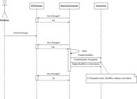
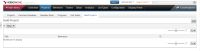
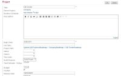
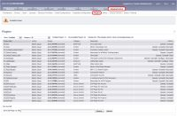
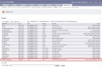
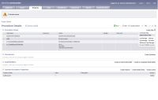
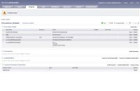
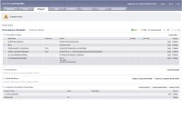

Description
The VersionOne ElectricCommander Notifier creates a record of ElectricCommander builds in VersionOne, so the development teams can associate stories and defects to a particular build. This visibility is useful when identifying problem builds or generating release notes.
Once the ElectricCommander Notifier has been installed, team members include a VersionOne identifier , such as “S-01454” or "TK-01234", in the comments of their SCM commit . Every time a build executes the Notifier creates a BuildRun asset in VersionOne with details of the build. If the build comment contains VersionOne Story or Defect Identifiers, the Notifier will create or reuse a VersionOne change-set and relate the build with the appropriate Story or Defect.
Using this integration you can better address the following situations:
- Defects
- Which build the defect was reported against?
- Which build contained the fix for the defect?
- Which builds contain work for the defect?
- For Stories (Backlog Item)
- Which builds contain work for the story?
- Which build contained the completed story?
- For Build Runs
- Which defects were fixed?
- Which stories were completed?
- Which defects were introduced?
- When work for a story or defect was included?
- Which Change-sets were included?
- For a range of Build Runs
- Which stories were completed?
- Which defects were fixed?
- Which defects were introduced?
The following sequence diagram illustrates the VersionOne ElectricCommander Publisher behavior.

{kind=link}
System Requirements
VersionOne:
- 8.1 or above, including Team Edition
Integration Server:
- Operating System---Windows 2000, 2003
Continuous Integration Server:
- Tested with ElectricCommander Version 3.8
Supported SCM Systems
- Subversion
- Perforce with short commit messages
Downloads
The latest version of V1Publisher is available at V1: Integration Downloads
Installation
These instructions presume that ElectricCommander is already installed, configured, and working properly.
- Ensure Connectivity
Verify that you can connect to your VersionOne instance from the machine hosting ElectricCommander - Extract Files
Download the ElectricCommander integration using the link above and extract it into a folder of your choice. - Configure
- Verify the installation
Once configuration is complete use the following steps to verify that the build integration is working- Navigate to your ElectricCommander instance
- Force a build on the project you configured
- Wait for build to complete
- Navigate to your VersionOne instance
- Login
- Select VersionOne project in 'My Projects' dropdown
- Navigate to the Reports | Reports Overview page
- Select the "Build Run Quicklist" Report
You should see an entry in the grid for the build you forced. If not, verify your configuration.
Configuration
Configure VersionOne
| If you are using Team Edition, you need to manually create the Build Project. Instructions for doing this are available on the VersionOne Community Site. |
- Log into the VersionOne application as admin
- Navigate to the Admin | Configuration | System page.
- Check the “Enable Build Integration” checkbox and click the Apply button.
- Navigate to the Admin | Projects | Build Project page
 - Click Add to add a new Build Project
- Specify the following
- Name – this is how the Build Project will be known to VersionOne users
- Reference – this is how the Build Project is known to ElectricCommander
- Click Ok to save the new Build Project
- Navigate to the Admin | Projects | Projects page
- Click Edit on the row for the project you want associated with a Build Project
- Using the “Build Projects” dropdown add the appropriate Build Project.
 - Click Ok to accept the changes
- Logout
{kind=link}
{kind=link}
{kind=link}
Configure ElectricCommander
This section describes how to install and configure the ElectricCommander plugin for use with VersionOne
- On the Administration, select the Plugins Tab
 - In the File Install section, click the 'Browse...' button
- Navigate to the subdirectory containing the VersionOne plugin and select the VersionOneIntegration.jar file.
- Click 'Upload'
- Locate the integration in the list of plugins and click the 'Promote' Link
 - Click the Configure Link for the VersionOne plugin
- Enter your VersionOne connection parameters
Parameter Description Required VersionOne URL The URL of the VersionOne Application. True Username Valid VersionOne Username. True Password Password for the specified Username True Reference expression The regular expression to use when matching primary workitems (stories and defects) with change comments. True VersionOne reference Field The system name of an attribute to search when matching primary workitems (stories and defects) with change comments. True Use Proxy Determines if the integrations connects to VersionOne through a proxy. No, unless you have a proxy Proxy server URL URL to proxy server Yes, when using a proxy Proxy server username Username for proxy server Yes, when using a proxy Proxy server password Password for proxy user Yes, when using a proxy - Click the Test Connection and Save button. If everything is correct you are returned to the Administration page.

ElectricCommander security prevents reading the password once it has been persisted. If you click the Configure link again, you will need to re-enter the password - If your ElectricCommander server is not running on the default port, you need to perform the following steps:
- On the ElectricCommander Administration, click the Server Tab
- In the Custom Server Properties section, click the Create Property link
- Use the following table to create a new property
Field Value Name hostPort Value Port used to access your ElectricCommander instance
{kind=link}
{kind=link}
{kind=link}
{kind=link}
The plugin is now installed and configured. To use the plugin on a project you need to:
- Select the Procedure you wish to modify
- Select the "Subprocedure Step" option from the Create Step dropdown menu
 - Using the the table below, create a new step
Field Value Name Publish Results To VersionOne Project Click Browse and select the VersionOne Integration Procedure Click Browse and select Publish Resource Click Browse and select the appropriate resource - Click Ok to save the settings.
- Place the VersionOne step after build and checkout code steps.
 - Select the "Subprocedure Step" option from the Create Step dropdown menu
- Using the the table below, create a new step
Field Value Name retrieve All Commit Messages Project Click Browse and select the SCM integration being used for this build Procedure Click Browse and select updateLastGoodAndLastCompleted Resource Click Browse and select the appropriate resource - Click Ok to save the settings.
- Move this procedure below the VersionOne Publish Procedure

{kind=link}
{kind=link}
{kind=link}
{kind=link}
{kind=link}